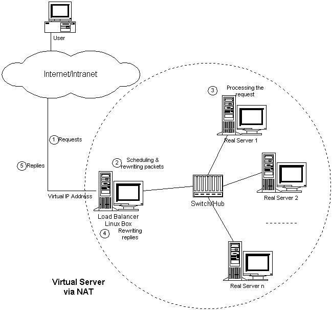
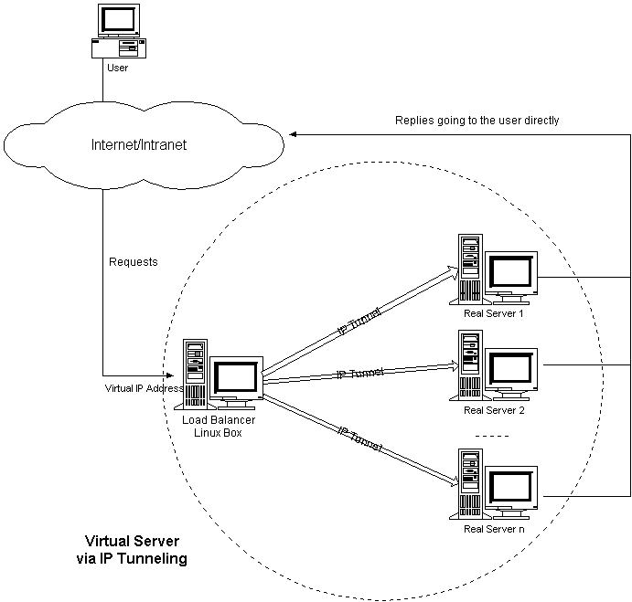
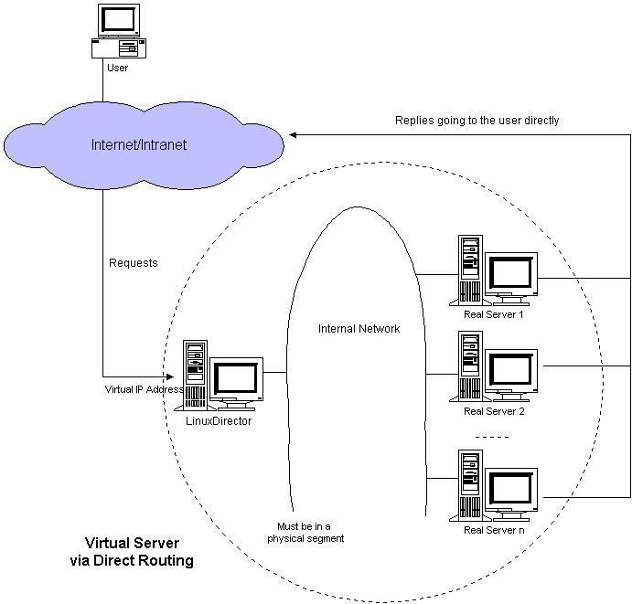
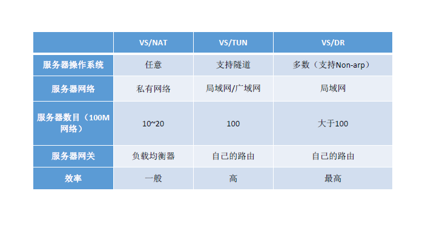

LVS (Linux Virtual Server)到底是什么?
它是一种集群(Cluster)技术，采用IP负载均衡技术和基于内容请求分发技术。调度器具有很好的吞吐率，将请求均衡地转移到不同的服务器上执行，且调度器自动屏蔽掉服务器的故障，从而将一组服务器构成一个高性能的、高可用的虚拟服务器。整个服务器集群的结构对客户是透明的，而且无需修改客户端和服务器端的程序。
LVS组成部分
- 负载调度器（load balancer/ Director），它是整个集群对外面的前端机，负责将客户的请求发送到一组服务器上执行，而客户认为服务是来自一个IP地址（我们可称之为虚拟IP地址）上的。
- 服务器池（server pool/Realserver），是一组真正执行客户请求的服务器，执行的服务一般有WEB、MAIL、FTP和DNS等。
- 共享存储（sharedstorage），它为服务器池提供一个共享的存储区，这样很容易使得服务器池拥有相同的内容，提供相同的服务。
三种IP负载技术
1. VS/NAT
VS/NAT(Virtual Server via Network Address Translation)是一种最简单的方式，所有的RealServer只需要将自己的网关指向Director即可。客户端可以是任意操作系统，但此方式下，一个Director能够带动的RealServer比较有限。在VS/NAT的方式下，Director也可以兼为一台RealServer。通过网络地址转换，调度器重写请求报文的目标地址，根据预设的调度算法，将请求分派给后端的真实服务器；真实服务器的响应报文通过调度器时，报文的源地址被重写，再返回给客户，完成整个负载调度过程。

2. VS/TUN
采用NAT技术时，由于请求和响应报文都必须经过调度器地址重写，当客户请求越来越多时，调度器的处理能力将成为瓶颈。为了解决这个问题，调度器把请求报 文通过IP隧道转发至真实服务器，而真实服务器将响应直接返回给客户，所以调度器只处理请求报文。由于一般网络服务应答比请求报文大许多，采用 VS/TUN技术后，集群系统的最大吞吐量可以提高10倍。VS/TUN(Virtual Server via IP Tunneling)隧道（IPtunneling）是将一个IP报文封装在另一个IP报文的技术，这可以使得目标为一个IP地址的数据报文能被封装和转发到另一个IP地址。IP隧道技术亦称为IP封装技术（IP encapsulation）。IP隧道主要用于移动主机和虚拟私有网络（Virtual Private Network），在其中隧道都是静态建立的，隧道一端有一个IP地址，另一端也有唯一的IP地址。它的连接调度和管理与VS/NAT中的一样，只是它的报文转发方法不同。调度器根据各个服务器的负载情况，动态地选择一台服务器，将请求报文封装在另一个IP报文中，再将封装后的IP报文转发给选出的服务器；服务器收到报文后，先将报文解封获得原来目标地址为VIP 的报文，服务器发现VIP地址被配置在本地的IP隧道设备上，所以就处理这个请求，然后根据路由表将响应报文直接返回给客户。

3. VS/DR
VS/DR(Virtual Server via Direct Routing)通过改写请求报文的MAC地址，将请求发送到真实服务器，而真实服务器将响应直接返回给客户。同VS/TUN技术一样，VS/DR技术可极大地 提高集群系统的伸缩性。这种方法没有IP隧道的开销，对集群中的真实服务器也没有必须支持IP隧道协议的要求，但是要求调度器与真实服务器都有一块网卡连 在同一物理网段上。

三种方法的优缺点比较

具体配置，请看下一篇！